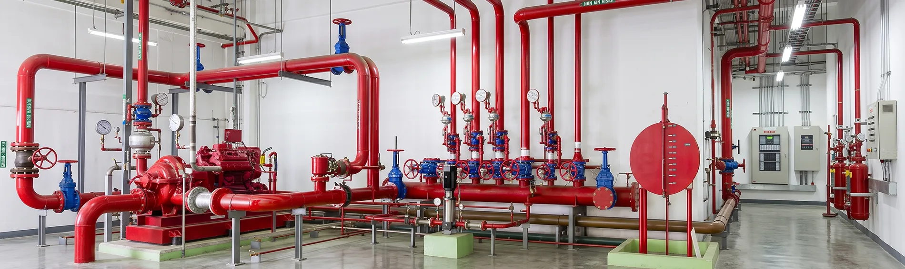
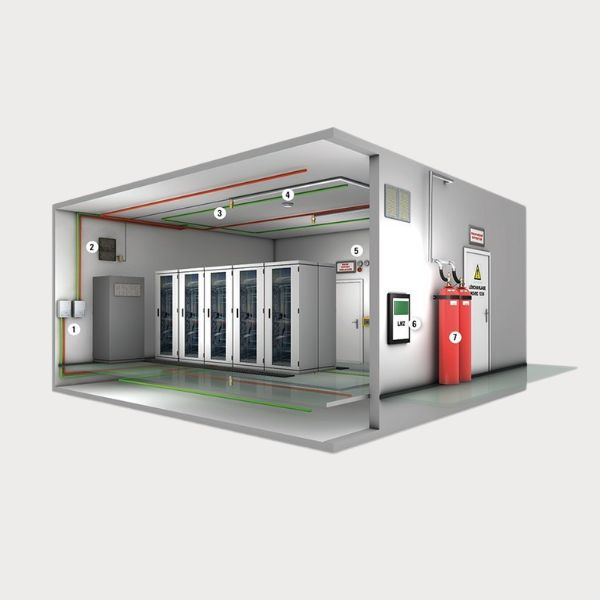
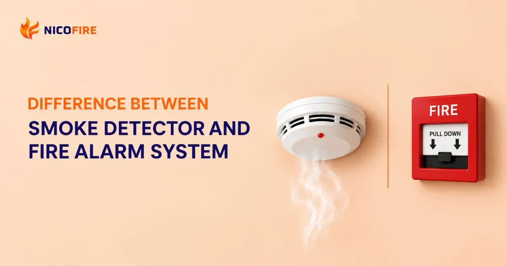
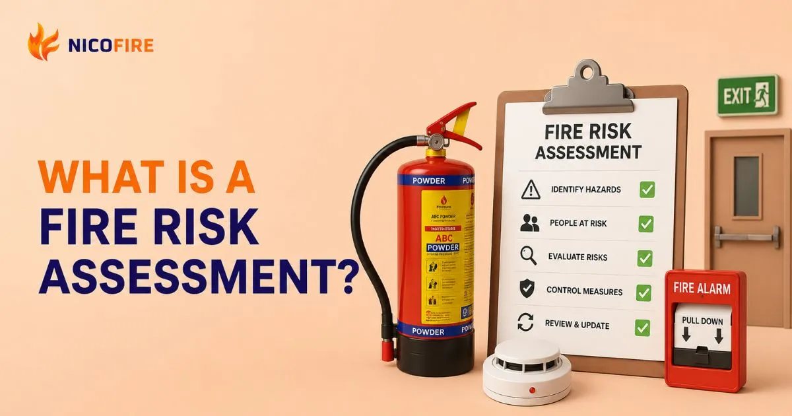

A fire hydrant system is the backbone of fire protection for commercial buildings, factories and housing complexes across Nepal. Here's what it is, how it works, and how to get one installed right.
A fire hydrant system is a network of pipes, pumps, valves and hydrant outlets that delivers high-pressure water to any point of a building during a fire emergency. It lets trained personnel — or the fire brigade — attack flames quickly before they spread.
In Nepal's growing cities like Kathmandu, Pokhara and Dhangadhi, hydrant systems are now standard for malls, hospitals, hotels, factories and high-rise apartments. A professionally designed fire hydrant system from Nicofire is engineered for local water pressure conditions and building codes.

Every reliable fire hydrant system is built from these essential parts, working together as one network.
Strategically placed outlets on each floor let firefighters connect hoses instantly and direct water exactly where the fire is.
Heavy-duty MS/GI piping forms the ring main that carries pressurized water throughout the building without leakage or pressure loss.
Main, standby and jockey pumps maintain constant pressure in the network, automatically kicking in when pressure drops.
First-aid hose reels give occupants a way to fight small fires immediately, before they grow out of control.
Underground or overhead reservoirs guarantee supply even if the municipal line fails during an emergency.
Integrated with fire alarm systems, the panel alerts occupants and starts pumps the moment a fire is detected.
The right configuration depends on your building's size, climate exposure and risk profile.

Pipes stay filled with pressurized water at all times, so response is instant. Ideal for heated indoor environments like malls, hospitals and offices in Nepal's cities. This is the most common fire hydrant system choice for commercial buildings.

Pipes remain empty until the system activates — perfect for unheated or outdoor areas where freezing is a risk. Water floods the network only when a fire is confirmed, often tied to detection systems.

A hydrant system is only as good as its installation and upkeep. Poor design leaves dead zones; neglected maintenance leaves you unprotected when it counts.
Quick answers about fire hydrant systems in Nepal.
Cost depends on building size, number of floors, pump capacity and pipe routing. A site survey gives an accurate quote — request a free assessment to get exact pricing for your property.
Fire safety norms increasingly require hydrant coverage for malls, hospitals, hotels, factories and high-rises. Check with your local authority — and talk to Nicofire's experts for compliance guidance.
Pumps should be run-tested monthly, valves and hose reels inspected quarterly, and a full-flow test with certification done annually.
Yes. Retrofit installations are common — a survey maps pipe routes through shafts and risers with minimal disruption to occupants.
Nicofire designs, installs and maintains complete fire hydrant systems across Nepal, with branches in Kathmandu, Pokhara and Dhangadhi.
Get a free site survey and quotation for a complete fire hydrant system — designed for Nepal's buildings, installed by certified professionals.
Get My Free Quote